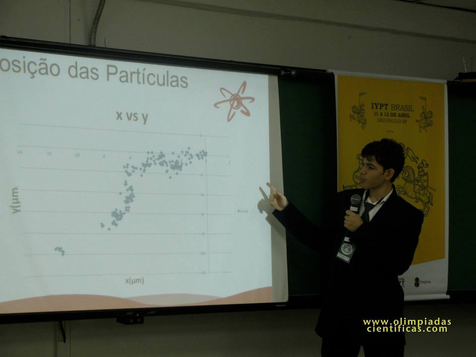

IYPTips #1: Arrume a casa
Conforme o IYPT Brasil foi crescendo, foi possível ver uma evolução gigantesca das equipes. Em 2010, no retorno do torneio nacional, era comum ver times relatores apresentando tudo lendo folhas de um caderno. Em 2014, foi mais fácil ver equipes relatoras indo além das apresentações, demonstrando o experimento e até mostrando alguns slides “escondidos”.
Em 2015, espero ver todas as equipes bem preparadas. Quero ver o pódio sendo decidido por décimos de ponto, e irei torcer por uma competição acirrada entre todas as equipes, em nome de um time internacional forte e unido que traga o ouro para o Brasil.
Em nome disso, inauguro a série IYPTips, com dicas das mais diversas para quem deseja ou irá participar do IYPT Brasil. A pouco mais de um mês do torneio nacional de 2015, pretendo lançar dicas sempre que possível.
E a primeira dica pode parecer simples, mas de caráter essencial a equipes novatas no mundo do IYPT.
IYPTip #1: Arrume a casa
Para equipes novatas no torneio nacional, o formato do IYPT pode assustar, pois não se parece em nada com as demais olimpíadas. O ambiente necessário para a realização de experimentos e preparo de apresentações pedirá alguns ajustes, mostrados a seguir.
1) Faça todas as apresentações em PowerPoint
Por mais que seus relatórios estejam muito bons, transforme todos em PowerPoint (ou um software equivalente). Realizar uma apresentação no torneio internacional permite que todos que estejam assistindo (jurados, equipes adversárias e demais espectadores) acompanhem sua explicação e vejam desde fórmulas a gráficos passo a passo.
 Apresentação feita no IYPT Brasil 2014 por Leonardo Florentino.
Faça isso não só para o papel de relator, mas também para as apresentações de oponente e relator. Para estes dois papéis, leve um template pronto e vá preenchendo ele durante o Fight.
2) Reserve uma sala para apresentações e para experimentos
Converse com seu (professor) líder e procure reservar uma sala (de aula) que permita projetar uma apresentação. Uma sala assim simula um ambiente semelhante ao do torneio nacional, o que facilitará bastante seu treinamento.
Procure também reservar uma sala que possa guardar seu aparato experimental (se puder ser a mesma das apresentações, melhor). Todo problema pedirá experimentos de uma forma ou de outra, e tê-los todos bem guardados num único lugar é essencial.
3) Utilize um notebook
No torneio nacional, oponentes e avaliadores precisam completar suas apresentações durante um Fight. Ter um notebook em mãos é algo extremamente necessário. Se sua equipe não tiver, procure um em sua escola ou peça emprestado. Se cada membro de sua equipe puder utilizar um notebook durante os treinamentos e no torneio nacional, melhor ainda.
4) Guarde tudo no Dropbox
Quando você deixa suas apresentações, fotos e anotações numa pasta do Dropbox, do OneDrive ou de qualquer serviço de cloud, você assegura que seu trabalho estará seguro e acessível em qualquer computador com internet. Faça isso desde já e economize dores de cabeça no futuro.
—
Após seguir estes passos, comece a escrever suas apresentações e a se preparar com tudo para o torneio nacional!
Acompanhe o Estudo Olímpico para mais IYPTips!
Veja também
IYPT BR – Blog parceiro do OC que cuida das notícias do IYPT Brasil e da equipe brasileira do IYPT.
IYPT Brasil – Site oficial da competição nacional.
Estudo para o IYPT – Página de estudos do OC para o IYPT.